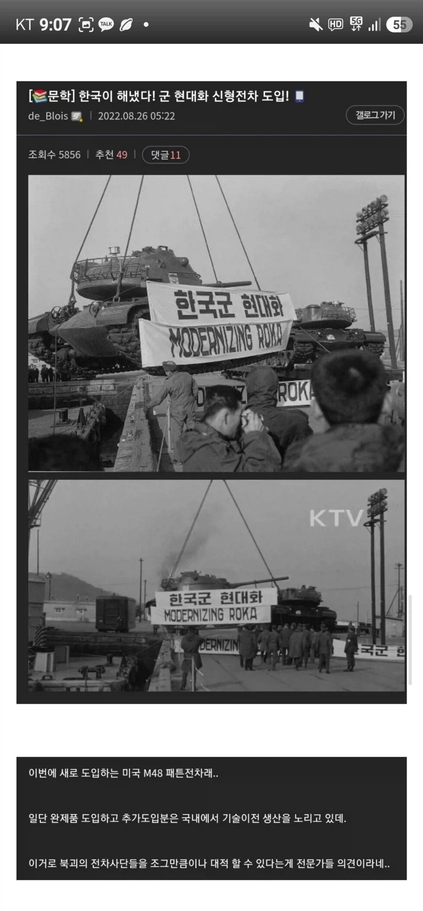
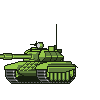

역시 땅끄는 미제지!
국산 땅크 만든다던데 굴러나 갈런지

역시 땅끄는 미제지!
국산 땅크 만든다던데 굴러나 갈런지
군대 m48쓰는 부대 나왔는데 지금도 쓰려나
M48A3K는 전부 퇴역했고, 5K는 동원사단 전차대대 편제로 넘어가서 예비군 훈련용 된 걸로 앎
M48A3K 쓰던 부대 나왔는데 퇴역했구나. 나 전역할 때 듣기로 해병대에서 포대로 대용하려고 가져갈거라 했던거 같은데.
5K 아직도 굴림? ㅅㅂ ㅋㅋㅋㅋㅋ
저거 a3k임?
a5k는 상무대에서만 봤었는데 아직도 사격은 되더라 ㄷㄷ
아니, 한국전쟁 후기에 나온 극초기 양산형 m48a1
저거랑 나중에 받은 m48a2c하고 주한미군 치장물자 m48a2c 우려먹은게 a3k a5k
깜짝 놀랐네
저거 씹구형이라던데? 땅크는 쏘오련놈들이 잘만들지 않냐?
동무, 그토록 쏘련제 땅크를 추어올리는 걸 보니 혹시 쏘련 공민이 아니오?
헉 저는 공산당이 싫어요!!!
그런 너를 위한 t80
그래서 불곰사업도 추진합니다
만들기 시작해서 그냥 많이 만들었습니다
나 현역때 전차대대에 저거 존나 많았는데 제대로 굴러가는거 단 한대도 없고 맨날 정비하고 수리만 함ㅋㅋㅋㅋ
나 신교대때 인근 전차대대에서 끌고와서 보여주고 그랬어.
나름 잘 굴러가더라.
그거 잠깐 보여주려고 날밤깐 전차병들의 노고를 기억해다오
해안고정포대로 전량 전환한다고 했을때니까
참 오래전이긴 하다.
모든 국군장병의 노고에 늘 감사해야지.
이제 소총도 국산호한 에무16을 쓴다고 하는데.
감개무랑합니다. ..
저게 2차세계대전때 타이거를 상대한 미군주력전차인가?
그건 m4셔먼 맨날 관짝되니 부랴부랴 개발 후 생산한게 m26퍼싱
오 그럼 우리한테 주는 저 전차가 체-신 전차는 맞나보네
신날만하네
어...음....뭐. 그렇죠??
근데 m60이 더 탐나보이긴 합니다.
이제 현해탄 건너 일본놈들도 우리한테 잘못했다 빌겠지?
다들 몇년도를 살고있는겨 😂 ㅋㅋ
근데 아직도 심장이 아파 ㅠㅠ
믿을만한 쏘오쓰에서 들은건데 일본보다 먼저 팬텀도 도입할거 같다더라
저 계열 아직도 쓰지 않음? 해병대인가
저거 발암게임에 미국 10티어 미듐 아니냐

패튼 터키나 이스라엘처럼 외장장갑 붙이고 흑표 파워팩넣어서 부활시켜서 50년더쓰자
우리도 탱크 한 대만 있었다면⋯